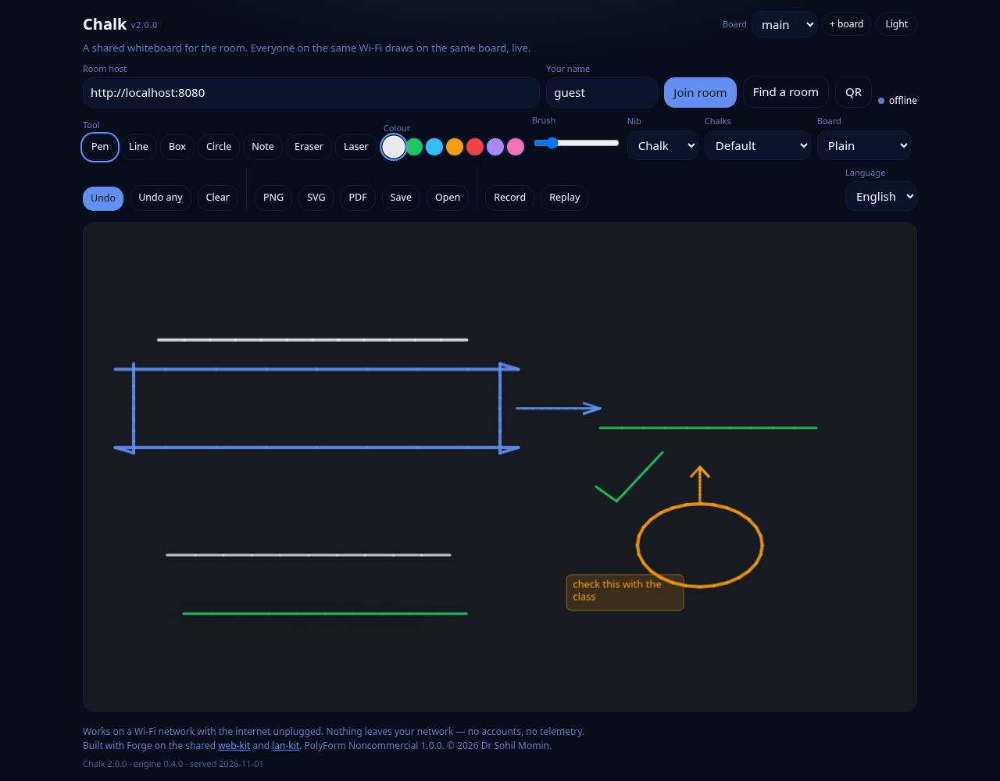

shared whiteboard · same Wi-Fi · nothing else
The board belongs to the room, not to the internet.
One laptop starts a room. Everyone on the same Wi-Fi opens the board and draws on it at the same time — finger or mouse, seven colours, a brush, an eraser, undo, clear for everyone, save a PNG. The strokes cross your own network and stop there. No account, no server, no internet, no telemetry, nothing to install.
The frame below is the real board, running from play/. Pick a scene and the frame draws it —
the same code the downloads carry, with three people already drawing on it.

Nothing here talks to a server: the demo draws locally, exactly as the board does when the room is quiet.
Three things, done properly, and then it stops.
Strokes appear on every screen as they are drawn — a point every 35 ms, over Server-Sent Events on your own LAN. A late joiner is caught up from the host's last 500 messages, so nobody walks in on a blank board.
Seven chalks, a brush from 1 to 24 px, an eraser, undo of your own last stroke, clear for everyone, and a PNG of the board saved to the device. All of it in the browser, none of it online.
Every inbound message is sanitised: colours must be #rrggbb or the eraser sentinel, sizes are
clamped to 1–64, points to the board, strokes to 5000. A buggy or hostile device on the Wi-Fi cannot
crash the board.
These are rules in the code, not hopes in a README.
0 runtime packages; open the file and it runs.Every push to main builds the three downloads below from docs/play and
deploys the page you are reading, all from the same commit. The rolling app-latest release always
carries the newest build; the numbered history is below it.
The page stopped advertising the roadmap — what to build next belongs in the README, not on the front door. The seven colour swatches show their own colours again: the app's theme block was painting every one of them the accent colour.
A landing page of its own, the app moved to docs/play/, and three demo scenes drawn by the
engine so the board is never shown empty. The board gained a theme toggle beside its title, and the
engine grew a pure, tested scene builder — the suite went from 38 to 50.
PolyForm Noncommercial 1.0.0 everywhere, stated the same way in the licence, the headers and the README. A build now fails if the published demo is not the app itself.
First pass: the canvas board, the four-message protocol with sanitisation, the zero-dependency room host with history replay for late joiners, and the EXE/APK build workflow.
# on one machine in the room — Node, no packages node host/room.js # Chalk room host # room: chalk # on the LAN (wlan0): http://192.168.1.20:8080 # then open the board on every device and join that address # …or just open the file, with no host at all: docs/play/index.html
The tests are headless and need nothing but Node:
node test-node.js
50 passed, 0 failed
docs/play/chalk.js — the board document and the four-message protocol. Pure,
zero-dependency, runs in the browser and under Node, so the whole mechanic is unit-tested.
docs/play/index.html — the canvas, the toolbar and the join panel, thin on
web-kit (storage, i18n, theme, a11y) and lan-kit (the room transport).
host/room.js — the 3 kB room host: SSE down, POST up, 500 messages of
history for whoever arrives late.
scripts/badges.py, scripts/icons.py, scripts/shot.sh —
the badges, the icons and the screenshots on this page are drawn locally, because a page that needs the
network to describe itself has broken its own rule.
Chalk is part of the Forge system and stands on two shared kits, both zero-dependency and offline: web-kit (storage, languages, theme, accessibility) and lan-kit (the LAN room transport). The licence is PolyForm Noncommercial 1.0.0 — the full text is in LICENSE, and the required notice is the first line of it.